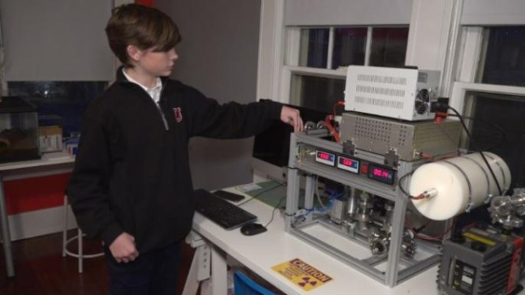

우리나라라면 수학공식이나 달달 외울 14세 소년이 첨단 물리학의 집합체인 ‘핵융합로’를 스스로 만들어냈다면 믿을 수 있을까? 최근 미국 USA투데이, 폭스뉴스 등 현지언론은 멤피스에 사는 잭슨 오스왈트(14)가 실제 작동하는 핵융합로를 제작하는데 성공했다고 보도했다. 잭슨이 만들어낸 소형 핵융합로는 놀랍게도 인터넷을 통한 독학과 부모의 적극적인 지원 덕에 가능했다. 처음 잭슨이 핵융합로에 관심을 가진 것은 불과 12살 때. 이후 소년은 인터넷에서 이와 관련된 정보와 제작방법을 찾아 연구하기 시작했다. 이어 이베이를 통해 진공부품, 펌프 등 관련 장비를 사들여 제작에 들어간 잭슨은 13세 생일을 맞이하기 불과 몇시간 전인 지난해 1월 19일 마침내 소형 핵융합로를 제작하는데 성공했다. 보도에 따르면 잭슨의 핵융합로는 5만볼트의 전기를 사용해 중수소 가스를 가열하고 핵을 융합시켜 에너지를 만든다.
다소 무시무시하게 느껴지는 핵융합(核融合, nuclear fusion)은 두 개의 원자핵이 모여 하나의 무거운 원자핵을 형성하는 현상으로, 핵융합로는 이 현상을 에너지로 전환시켜 전력 등으로 활용시키는 장치다. 흔히 ‘인공 태양’을 만드는 것에 비유하며 차세대 에너지원으로 각광받는 분야이기에 어린 소년의 성취는 무척이나 놀랍다. 잭슨은 “처음 핵융합로를 만들게 된 계기는 이를 통해 무엇을 할 수 있는지 사람들에게 알려주고자 한 것”이라면서 “집에 있는 오래된 놀이방을 개조해 실험실로 활용했다”고 밝혔다. 이어 “이베이에서 필요한 부품을 샀으나 내 프로젝트에 맞게 개조해야 했다”고 덧붙였다. 잭슨의 이른 성공이 가능했던 것은 부모의 뒷받침 덕이었다. 어린 아들을 위해 빈방을 실험실로 제공했고 총 1만 달러(약 1100만원)에 달하는 비용을 제공했다. 또한 전문가들에게 부탁해 방사능과 전기 작동의 위험성을 아들에게 교육시켜 안전한 실험이 될 수 있는 여건을 만들어줬다. 아빠 크리스는 “솔직히 아들이 정확히 무엇을 만드는지 이해하지는 못했다”면서 “다만 안전이 최우선이라 생각해 이에대한 지원에 노력했다”며 웃었다. 보도에 따르면 핵융합로를 만들어 낸 종전 최연소 기록은 지난 2008년 당시 14세였던 미국인 학생 테일러 윌슨이 갖고 있었다. 때문에 현지언론은 잭슨이 적어도 미국 내에서는 새로운 최연소 기록을 세운 것으로 평가했다.
